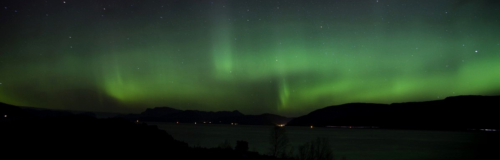
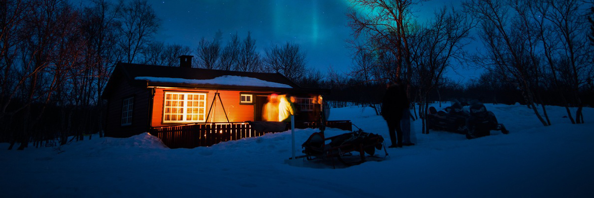

Velkommen!
Vi i Hytteutleie AS leier ut flotte hytter i nydelig norsk natur! Ta med vennene dine på en liten helge- eller ferietur. En hyggelig aften foran peisen, med fuglekvitter i det fjerne, er en fin kontrast til hverdagens mas og tjas!
 Kåret til årets beste utleiefirma for hytter i 2016, av Hyttemagasinet! |
"Den beste hytteopplevelsen jeg har noensinne opplevd!" -Kong Harald |
 Gratis doughnut om du bestiller før desember! |
|---|